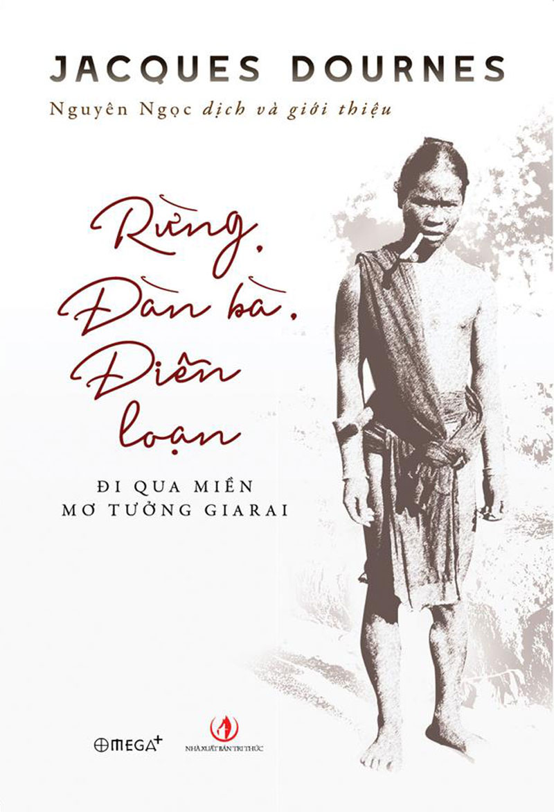

« Back
Rừng. Đàn Bà. Điên Loạn
By Jacques Dournes

Lời Giới Thiệu
Thay Lời Đề Tựa
Ký Hiệu Dùng Trong Sách Này
Phần Đầu Của Nhập Đề
QUYỂN IXỨ SỞ CỦA NHỮNG NGƯỜI ĐÀN BÀ TRONG RỪNG
Chương 2
Chương 3
Chương 4
Chương 5
Chương 6
Chương 7
QUYỂN IIVẤN ĐỀ CON HỔ HOANG TƯỞNG CỦA NGƯỜI ĐI SĂN
Chương 9
Chương 10
Chương 11
Chương 12
Chương 13
QUYỂN IIITRẠNG THÁI ĐI VẮNG, CƠN ĐIÊN ĐÃ ĐI QUA
Chương 15
Chương 16
Chương 17
Chương 18
Chương 19
Chương Phụlại Đi Qua
Phần Tiếpcủa Nhập Đề
Từ Vựng
Thư Mục
Những Công Trình Khác Được Dẫnhay Tham Khảo Về Các Vấn Đề Đặc Biệt